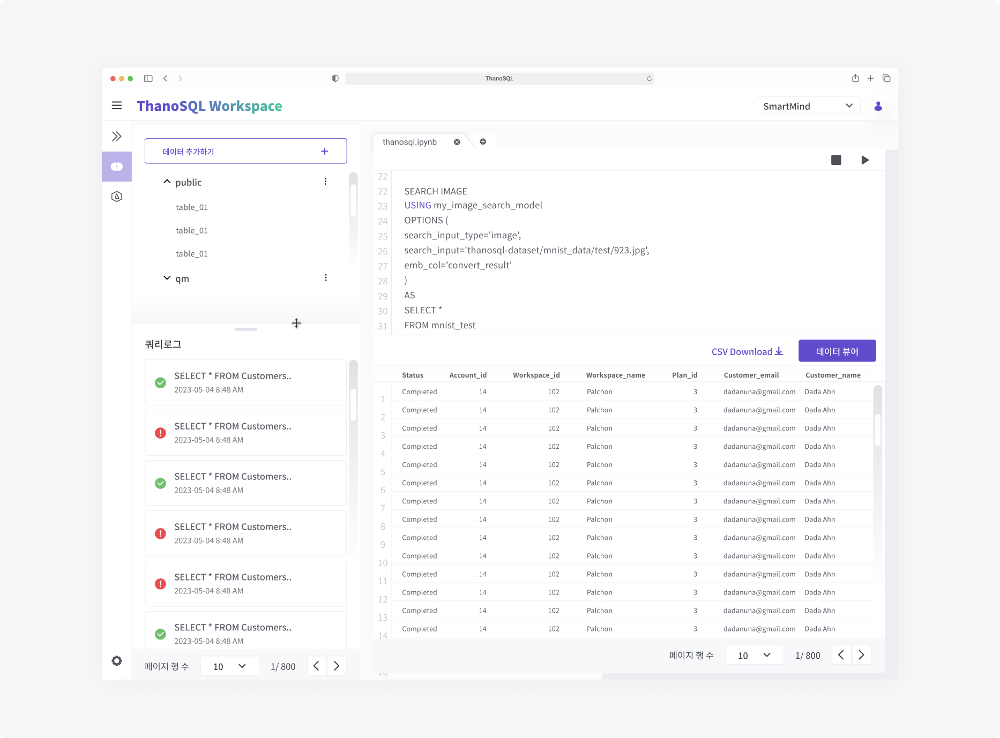
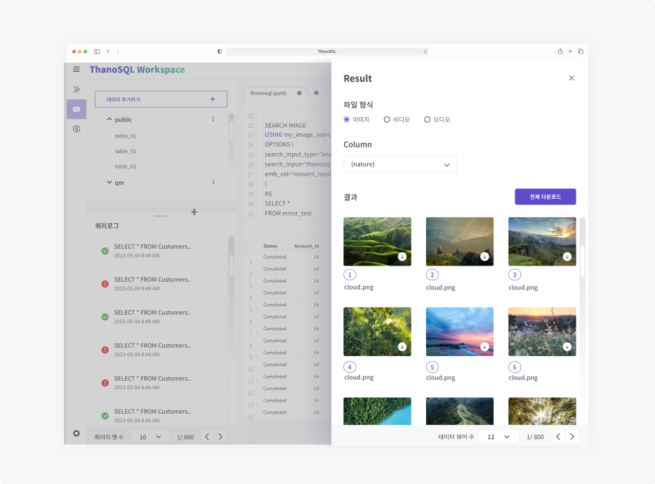
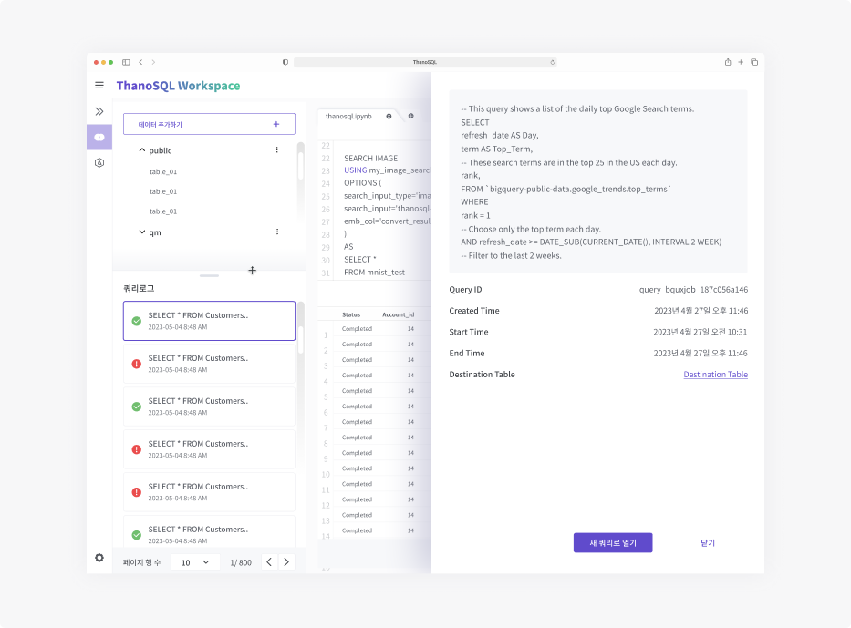
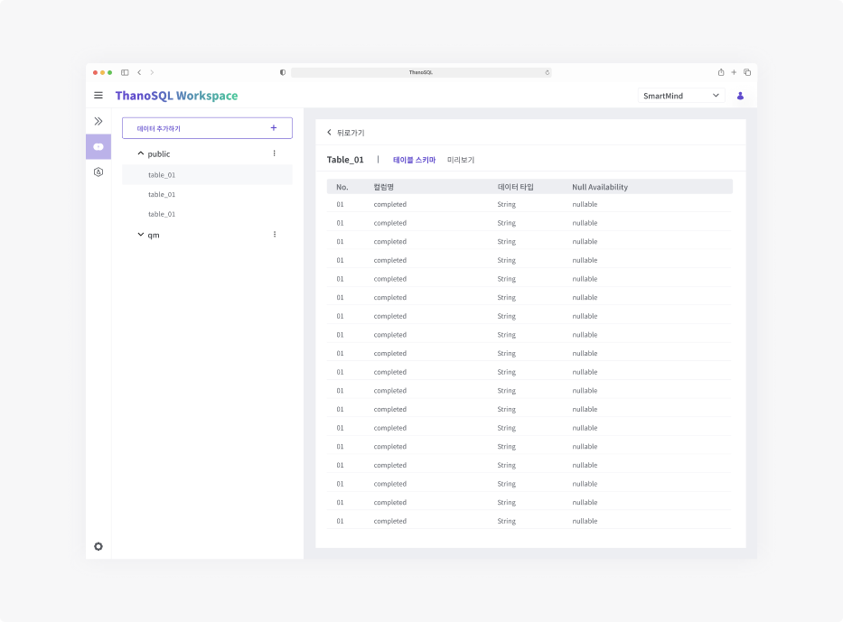
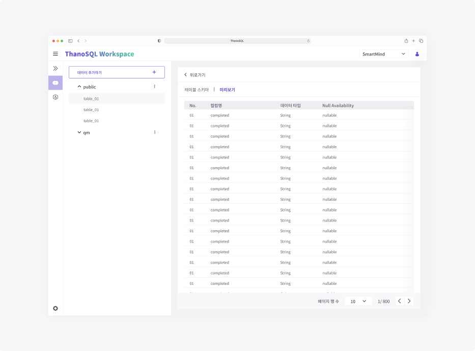
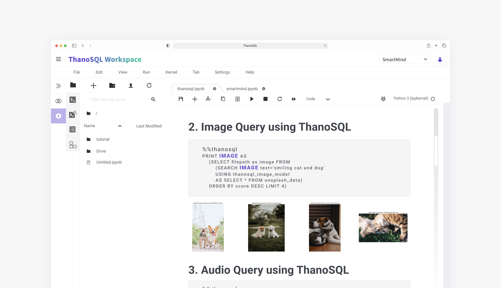

Web(DashBoard&Mobile)
PaaS / B2B
2021.12 ~ 2022.08(업데이트 중)
StoryBoard 작성
디자인 시스템 정의
UX설계
UI 디자인
Figma
Teams
Slack
Click up
많은 기업들이 데이터베이스 관리 시스템(DBMS : DataBase Management System) 사용하고 있습니다. 그러나 기업은 데이터베이스 시스템의 한계로 인해 정형 데이터만 처리할 수 있었고, 비정형 데이터에 대한 처리에 어려움을 겪고 있습니다. 비정형 데이터는 저장된 데이터를 불러올 때마다 구조화 과정을 거쳐야 하며, 이때 기본적으로 데이터양이 늘어나기 때문에 대부분의 기업들은 비정형 데이터 처리에 대한 비효율성을 경험하고 있기 때문입니다. 이러한 문제를 해결하기 위해 새로운 데이터베이스 시스템 언어인 ThanoSQL이 개발되었습니다. ThanoSQL은 정형 및 비정형 데이터 처리와 AI 모델링을 효율적으로 수행할 수 있는 기능을 제공하는 언어입니다. 이를 통해 기업은 엑셀과 비슷한 사용성으로 데이터로부터 가치 있는 인사이트를 추출할 수 있습니다.
저는 스토리보드 작성, UX 설계 및 UI디자인을 도맡았습니다. 프론트엔드, 백엔드 개발자와 함께 커뮤케이션하며 프로덕트 제작에 힘썼습니다.
첫번재로는 우선순위가 제일 높았던 기존 DBMS와의 차별점인 비정형 데이터를 어떻게 보여줄 것인지에 대해 고민을 많이 했어야 했습니다. 비정형 데이터를 사용자가 직접 확인 할 수 있어야 했고, 미디어 형식에 따라 보이는 뷰도 달라야 했기 때문에 이 부분에 고민 하는 시간을 제일 많이 투자했습니다.
또, 사용자들이 ThanoSQL이라는 새로운 데이터베이스 시스템 언어를 먼저 익숙하게 하기 위한 부분도 우선순위가 비교적 높았기 때문에 제이콥의 법칙(Jakob's law)을 도입하여 기존 개발자들이 친숙하게 느낄 수 있는 UX로 설계했고, UI는 사용자의 빠르고 편리한 Task 달성을 위해 좀 더 깔끔하게 구성했습니다.
차분하면서도 집중이 잘 되기 위함과 가독성을 높이기 위해 무채색을 위주로 사용하고 사용자의 빠르고 편리한 Task 달성과 비즈니스적으로 목표 도달을 위해 Focus 되어야 할 부분에 메인컬러를 사용했습니다.
또, 배경색을 neutral tone으로 설정하고 구분이 되어야 하는 콘텐츠는 박스형태로 레이아웃을 구성하고 white로 색을 주어 사용자가 해당 콘텐츠 인지를 더 쉽게 할 수 있게 구성했습니다.
Layout은 가운데 정렬과 왼쪽 정렬을 적절히 사용해 불필요한 눈 움직임을 방지하여 텍스트를 훨씬 쉽게 따라갈 수 있도록 했습니다.
Query Manager는 DBMS와 유사한 친숙한 UI로 ThanoSQL 쿼리을 실행하고 결과를 분석할 수 있습니다. 워크스페이스 DB의 스키마 및 테이블 구조를 쉽게 파악 할 수 있으며, 쿼리 로그로 이전 쿼리 결과들을 쉽게 다룰 수 있습니다. 또한 쿼리 실행 결과의 데이터 뷰어로 이미지, 비디오 등의 비정형 데이터를 분석합니다.
쿼리 매니저의 데이터 뷰어 기능은 정형 데이터와는 다른 방식으로 비정형 데이터를 표현해야 했습니다. 비정형 데이터를 직접 확인해야 했기 때문에, 미디어 형식으로 보여주는 방법에 대해 고민했습니다. 개발자들의 빠른 작업 속도를 고려하여 오른쪽에서 왼쪽으로 스와이프되는 모달 형식을 사용했습니다. 파일 형식과 비정형 데이터를 포함한 열을 선택한 후 해당 데이터의 정보와 실제 콘텐츠를 볼 수 있고, 다운로드할 수 있는 사용자 경험(UX)을 설계하고 UI를 디자인했습니다. 데이터 뷰어 기능을 통해 쿼리 결과 테이블 내의 비정형 데이터를 확인할 수 있습니다. 비정형 파일의 경로가 저장된 컬럼을 선택 후 파일 형식(이미지, 비디오, 오디오)을 선택하여 비정형 데이터를 표시합니다. 하단의 페이지 이동 기능으로 한 번에 표시할 개수를 조절하고 다른 페이지로 이동할 수 있습니다.
쿼리 로그는 다른 방식으로 UX를 설계했습니다. 다른 제품은 단순히 선택한 쿼리를 보여주기만 했지만, 사용자가 어떤 쿼리를 선택하고 확인했는지를 알 수 있는 사용자 경험이 필요하다고 판단했습니다. 따라서, 데이터 뷰어와 유사한 방식으로 오른쪽에서 왼쪽으로 스와이프되는 모달을 사용하여 이를 구현했으며, 사이드바에 쿼리 로그를 표시함으로써 사용자가 선택하고 확인한 쿼리 로그를 파악할 수 있는 사용자 경험(UX)을 설계하고 디자인했습니다. Query Manager에서 실행한 모든 쿼리는 기록되어 쿼리 로그 섹션에서 확인할 수 있습니다. 쿼리 생성시간의 최신순으로 나열되며 실행한 쿼리 구문과 쿼리의 성공 여부를 보여줍니다.
사이드바에서 선택한 테이블 스키마를 강조하여 표시하고, 상단에 선택한 테이블 스키마 이름을 한 번 더 보여줌으로써 사용자가 선택한 데이터 스키마를 명확히 알 수 있게 했습니다. 또한, 해당 데이터 테이블의 컬럼명, 데이터 타입 및 Null 가능 여부를 확인할 수 있습니다.
해당 데이터 테이블의 내용을 빠르게 파악하고 빠른 작업을 할 수 있게 디자인 했습니다.
Jupyter Lab을 기반으로 데이터 탐색, AI/ML 모델링 및 응용 프로그램 개발을 위한 다목적 환경을 제공합니다. 이 또한 제이콥의 법칙(Jakob's law)을 참고하여 UX 설계와 UI 디자인을 했습니다.
해당 프로젝트는 우선순위를 잘 정하고 진행할 수 있는 프로젝트였고, 아쉽게도 사용자의 문제가 해결된것은 눈으로 직접 확인 할 수 없었지만,비정형 데이터의 관리측으로 보았을 때는 문제가 해결되었다고 생각합니다. 이전에는 파일명으로만 관리할 수 있었던 비정형 데이터들을 이제는 시각적으로 확인할 수 있으며, 데이터가 어느 경로에 위치해 있는지 상대적 경로로 파악할 수 있고, 사용자는 해당 비정형 데이터를 부분 다운로드 또는 전체 다운로드할 수 있게 되었습니다. 이로 인해 근본적으로 저희 팀에서 해결하고자 했던 문제는 해결되었다고 생각합니다. 또, UX 설계와 개발 사이의 협의를 조율하기 위해 노력하며 커뮤니케이션에 주의를 기울였습니다. 이를 통해 효과적인 커뮤니케이션과 디자인 역량을 향상시킬 수 있는 경험을 얻었습니다. 프로젝트를 성공적으로 완료함으로써 팀원들과의 협력과 의사소통이 중요하며, 디자인 업무에서의 역량을 향상시킬 수 있는 기회를 가졌습니다.